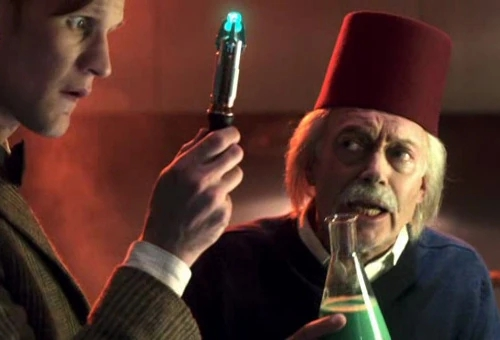

Эра Одиннадцатого Доктора
<<< НАЗАД ||| Смерть — единственный ответ ||| ДАЛЬШЕ >>>

Death Is the Only Answer
1 октября 2011
Формат: 4-минутный эпизод
| Варианты озвучек: | * MVO BaibaKo |
|---|---|
| Скачивание и просмотр: |
Мини-эпизод с Одиннадцатым Доктором и Альбертом Эйнштейном, снятый по победившему в конкурсе сценарию учеников школы Окли и показанный 1 октября 2011 года в передаче «Доктор Кто: Конфиденциально».

